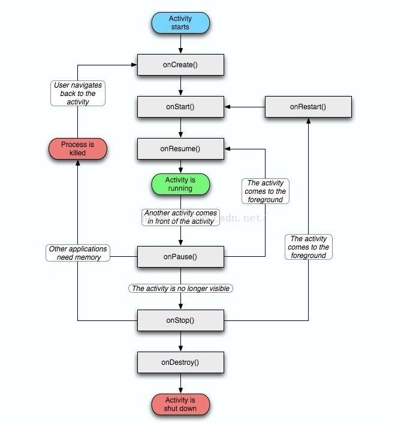
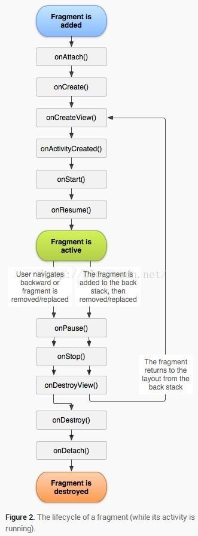
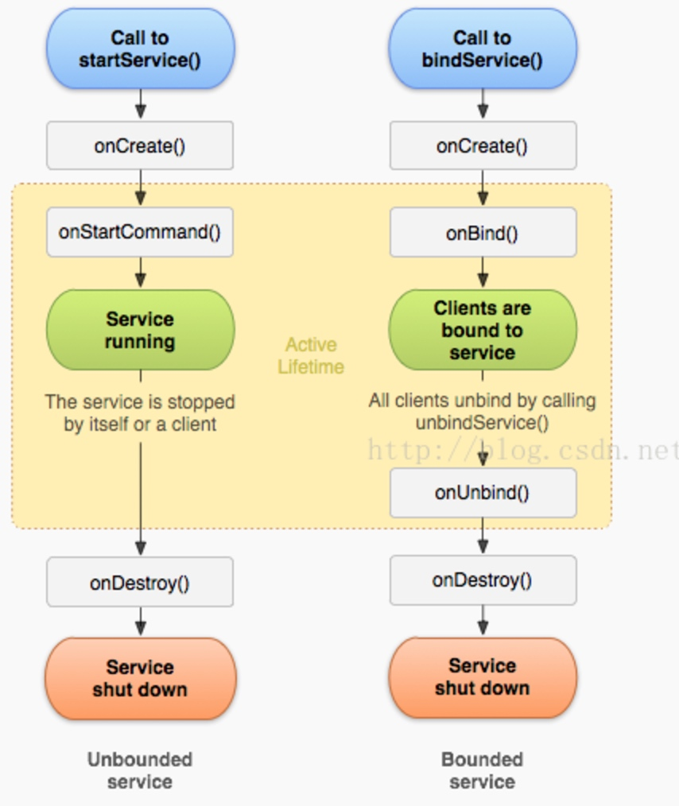
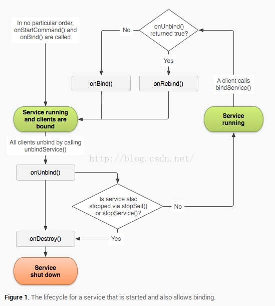

Android的话，多是一些项目中的实践，使用多了，自然就知道了，还有就是多逛逛一些名人的博客，书上能讲到的东西不多。另外android底层的东西，有时间的话可以多了解一下，加分项。推荐书籍：《疯狂android讲义》《深入理解android》其他综合性的书籍也需要阅读，推荐：《程序员面试笔试宝典》《程序员面试金典》。
1. Activity与Fragment的生命周期
（1）Activity的生命周期如下图所示：

（2）Fragment生命周期如下图所示：

2. Acitivty的四种启动模式与特点
Android中的Activity由任务栈管理，当我们start一个新的Activity时，就往任务栈中新加入一个栈帧，而当我们finish一个Activity界面时，则往任务栈中移除一个栈帧。Activity具有四种启动模式，我们可以在配置文件中通过修改launchMode修改，启动模式分别是：standard、singleTop、singleTask和singleInstance
standard
standard为默认Activity的启动模式。在standard启动模式下，无论何时start一个Activity，系统都会往任务栈中加入一个新的栈帧。
singleTop
在singleTop启动模式下，当我们start一个Activity时，系统会先去检测任务栈栈顶的Activity和要启动t的Activity是否相同。如果相同则不进行任何操作，否则往任务栈中加入一个新的栈帧。
singleTask
在singleTask启动模式下，当我们start一个Activity时，系统会先去检测任务栈中是否含有将要启动的Activity。如果含有，则把该Activity所在栈帧的顶部的栈帧移除，使该Activity所在的栈帧处在栈顶，如果没有，则新加入一个栈帧。
singleInstance
在singleInstance启动模式下，当我们start一个新的Activity时，该Activity会在一个新的任务栈中启动。
4. Service的生命周期，两种启动方法，有什么区别
Android中的Service组件可以通过startService和bindService两种方法来启动，其生命周期示意图如下：

如果一个Service同时被调用了startService和bindService方法，那么它的生命周期就变成如下图所示：

5. 怎么保证service不被杀死
要想使Service存活下来，我们就必须保证Service所在的进程不被杀掉，一般来说有以下方法：
1. 在onStartCommand回调方法中返回START_STICKY，那么该进程被杀掉后系统会试图重启它
2. 设置配置文件中application的persistent属性，把应用提升为系统级别应用，免疫low memory killer
3. 在Service的onDestroy方法中重启该Service，不过如果进程被直接杀掉这种方法就无效了
4. 通过监听特殊的系统广播（如屏幕变化、电量变化、网络变化等）去不断重启Service
5. 使用AlarmManager定时重复开启Service
6. 通过设置Service的process属性，把Service放在子进程中，避免与主进程一起被回收
7. 开启一个另外的进程与Service进程互相监视，双方要是有任意一方被杀掉则重启
6. 广播的两种注册方法，有什么区别
Android四大组件之一的broadcast（广播）拥有两种不同的注册方法：静态注册与动态注册
静态注册
广播静态注册指把广播相应的信息写在AndroidManifest.xml中，例子如下：
<receiver android:name=".StaticReceiver">
<intent-filter>
<action android:name="XXX" />
</intent-filter>
</receiver>
静态广播的好处在于：不需程序启动即可接收，可用作自动启动程序
动态注册
广播动态注册指在程序中调用registerReceiver方法来注册广播，例子如下：
IntentFilter filter = new IntentFilter();
filter.addAction("XXX");
DynamicReceiver receiver = new DynamicReceiver();
registerReceiver(receiver, filter);
// 不使用后记得取消注册
unregisterReceiver(receiver);
动态广播的好处在于：程序适应系统变化做操作，但在程序运行状态才能接收到
7. Intent的使用方法，可以传递哪些数据类型
Intent即意图，是Android中连接四大组件的枢纽，Android中的Activity、Service和BroadcastReceiver都依靠Intent来启动。
Intent对象的属性大致包含七种，分别是Component、Action、Category、Data、Type、Extra、Flag。
Component
Component用于明确指定需要启动的目标组件，使用方法如下：
Intent intent = new Intent();
// 方法一：传入上下文参数与class参数
intent.setComponent(new ComponentName(context, XXX.class));
// 方法二：传入包名与类名
intent.setComponent(new ComponentName(pkg, cls));
指定Component属性的Intent已经明确了它将要启动的组件，因此这种Intent也被称为显示Intent，没有指定Component属性的Intent被称为隐试Intent。
Action、Category
Action代表Intent所要完成的一个抽象“动作”，而Category则用于为Action增加额外的附加类别信息，它们的使用方法如下:
Intent intent = new Intent();
// 设置一个字符串代表Action
intent.setAction(action);
// 添加一个字符串代表category
intent.addCategory(category1);
intent.addCategory(category2);
值得注意的是Action属性是唯一的，但Category属性可以有多个。通常设置了Action和Category来启动组件的Intent就不指定Component属性了，因此这种Intent被称为隐试Intent。
Data、Type
Data属性接受一个Uri对象，Data属性通常用于向Action属性提供操作的数据。Type属性用于指定该Data属性所指定Uri对应的MIME类型。它们的使用方法如下：
Intent intent = new Intent();
// 设置Data属性
intent.setData(new Uri());
// 设置Type属性
intent.setType(type);
// 同时设置Data和Type属性
intent.setDataAndType(data, type);
值得注意的是Data属性和Type属性会互相覆盖，如果需要同时设置Data属性和Type属性需要使用setDataAndType。
Extra
Intent的Extra属性用于进行数据交换，Intent的Extra属性值应该是一个Bundle对象（一个类似Map的对象，可以存入多个键值对，但存入的对象必须是基本类型或可序列化的），用法如下：
Intent intent = new Intent();
// 直接往Intent添加基本类型，在方法内也是把数据存入Bundle
// 该方法有多种重载
intent.putExtra(name, value);
// 新建Bundle
Bundle bundle = new Bundle();
// 往Bundle添加数据，XXX为基本类型
bundle.putXXX(key, value);
bundle.putXXXArray(key, value);
// 把Bundle添加进Intent
intent.putExtras(bundle);
Flag
Intent的Flag属性用于为该Intent添加一些额外的控制旗标，Intent可调用addFlags方法来添加控制旗标。
8.ContentProvider使用方法
为了在应用程序之间交换数据，Android提供了ContentProvider。当一个应用程序需要把自己的数据暴露给其他程序使用时，该应用程序就可以通过ContentProvider来实现，而其他程序则使用ContentResolver来操作ContentProvider暴露的数据。
实现ContentProvider的Java代码如下：
public class MyProvider extends ContentProvider {
@Override
public boolean onCreate() {
// 第一次创建时调用，如果创建成功则返回true
// 可以在这里打开数据库什么的
return true;
}
@Override
public String getType(Uri uri) {
// 返回ContentProvider所提供数据的MIME类型
return null;
}
@Override
public Cursor query(Uri uri, String[] projection, String selection,
String[] selectionArgs, String sortOrder) {
// 实现查询方法
return null;
}
@Override
public Uri insert(Uri uri, ContentValues values) {
// 实现插入方法，返回插入条数
return null;
}
@Override
public int delete(Uri uri, String selection, String[] selectionArgs) {
// 实现删除方法，返回删除条数
return 0;
}
@Override
public int update(Uri uri, ContentValues values, String selection,
String[] selectionArgs) {
// 实现更新方法，返回更新条数
return 0;
}
}
当我们实现了自己的ContentProvider后，还需要去AndroidManifest.xml中注册才行：
<provider
android:name=".MyProvider"
android:authorities="com.example.test.provider"
android:exported="true" />
配置ContentProvider时我们需要设置如下属性：
- name：类名
- authorities：为ContentProvider指定一个对应的Uri，其他程序通过这个Uri来找到该ContentProvider
- exported：允许ContentProvider被其他应用调用 当其他应用需要访问我们提供的ContentProvider的使用，只需使用ContentResolver并传入相应的Uri即可：
public class MyActivity extends Activity {
private static String TAG = "MyActivity";
@Override
protected void onCreate(Bundle savedInstanceState) {
super.onCreate(savedInstanceState);
setContentView(R.layout.activity_main);
ContentResolver resolver = getContentResolver();
// 传入对应的Uri进行增删查改操作
resolver.query(uri, projection, selection, selectionArgs, sortOrder);
resolver.insert(url, values);
resolver.delete(url, where, selectionArgs);
resolver.update(uri, values, where, selectionArgs);
}
}
除此之外，我们还可以使用ContentObserver来为ContentProvider添加观察者。我们在其他程序的ContentResolver中注册ContentObserver，当ContentProvider发生改变时，我们在数据改动的使用调用：
getContext().getContentResolver().notifyChange(uri, null);
那么此时ContentObserver中的onChange回调方法就会被调用，我们就可以简单地监听ContentProvider的数据改变了。